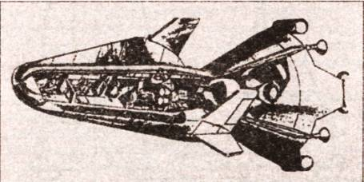

Снова на Селену, или Воспоминания о забытых проектах
ВОЗВРАЩЕНИЕ НА ЛУНУ. Собираются ли земляне снова на Луну? Данный вопрос интересует не просто любопытных, но и специалистов. Многие из американских ученых полагают, что не стоило тратить 30 млрд долларов только для того, чтобы доказать всему миру превосходство американской техники над советской и привезти с Луны несколько центнеров камней. Не утратили своего интереса к Селене и российские ученые, конструкторы, космонавты.
И вот какие горизонты начинают прорисовываться в последнее время. Возвращение на Луну, по всей вероятности, будет сопряжено с созданием постоянно действующей лунной базы. Причем если поначалу она, эта база, будет небольшой, то со временем она должна расшириться, стать настоящим полигоном для испытания нового оборудования, предназначенного для обследования других планет, в первую очередь — Марса.
При этом, возможно, конструкторы используют какие-то идеи, оставшиеся в архивах.
АЛЬТЕРНАТИВЫ «АПОЛЛОНУ». Например, мало кто ныне знает, что у американцев, кроме программы «Аполлон», существовала еще и секретная программа «Лунэкс», подготовленная командованием ВВС США.
Она, в частности, предусматривала два варианта полетов на Луну. Первый, которому командование ВВС США отдавало предпочтение, предполагал достижение Луны методом «прямого выстрела». Говоря иначе, космический корабль доставлялся на Луну, стартуя непосредственно с Земли с помощью мощнейшей ракеты-носителя. Второй вариант предусматривал сборку корабля на околоземной орбите с последующим стартом к Луне.
Сам космический корабль должен был состоять из лунного посадочного модуля, лунного стартового модуля и разгонного транспортного средства. Однако в отличие от той схемы, которая некогда была изобретена Ю. Кондратюком и использована американцами в программе «Аполлон», посадочный модуль «Лунэкс» представлял собой крылатый ракетоплан, способный осуществлять маневры в атмосфере Земли и посадку на обычный аэродром.
При этом авторы программы в своей докладной записке, положенной на стол президенту, настоятельно подчеркивали, что «Лунэкс» имеет не только политическое, но и военное значение. В случае ядерного конфликта между СССР и США базу, расположенную на обратной стороне Луны, достать не так-то легко. А вот оттуда по противнику и будет нанесен решающий удар.
Для осуществления данной программы ее авторы предлагали набрать специальный корпус в 6000 человек. Кроме того, еще 60 000 специалистов будут заниматься материально-технической базой проекта.
В докладе ВВС также указывалось, что для реализации планов потребуется создание трех типов летательных аппаратов. Кроме ракетоплана и стартового лунного модуля, о которых шла речь выше, главную трудность в осуществлении экспедиции составляло создание сверхтяжелой ракеты-носителя, двигатели которой должны были работать на жидком водороде и кислороде, создавая стартовую тягу не менее 2700 т.
Согласно расчетам, затраты на реализацию проекта должны были составить в период с 1962-го по 1971 год порядка 7,5 млрд долларов. Это было не так много, втрое меньше, чем было затрачено в действительности. Однако явное нежелание отдавать космическую программу в руки «ястребов» из военного ведомства заставило Дж. Кеннеди отклонить программу «Лунэкс».
Тем более что у него был выбор. Скажем, идеологи программы «Джемини», в частности, инженер Джеймс Чемберлен из НАСА, предлагали в свое время модернизировать двухместные корабли с таким расчетом, чтобы они могли долететь до Луны.
По мнению Чемберлена и его единомышленников, программа «Джемини-Кентавр-ЛМ» обошлась бы в 20 раз дешевле программы «Аполлон», стоившей, как известно, 24 млрд долларов.
Правда, экономя на всем, Чемберлен предложил произвести высадку единственного астронавта на Луну, причем на модуле открытого типа. Говоря совсем уж попросту, тот храбрец в скафандре должен был просто сидеть верхом на баке с топливом, под которым располагался ракетный двигатель.
Однако НАСА отвергло этот проект, сочтя его чересчур рискованным.
Наконец, и в самом НАСА, кроме осуществленной программы, вначале рассматривалось и несколько других вариантов. Согласно одному из них, старт к Луне осуществлялся сразу с Земли. Для этого нужна была сверхмощная ракета «Нова», способная вывести на околоземную орбиту 180 т полезной нагрузки, а на траекторию к Луне — 68 т.
Однако разработка такой ракеты потребовала бы слишком много времени, а потому проект был забракован, как и еще полтора десятка других.
СОВЕТСКИЕ ЛУННЫЕ ПРОГРАММЫ. В нашей стране тоже, кроме официальной, существовало несколько «полуподпольных» программ высадки на Луну.
Одну из них, например, проталкивал Владимир Челомей. После отставки Хрущева он тоже попал в опалу, поскольку у него в ОКБ-52 работал сын отставного руководителя советского государства.
Возможно, тем самым Челомей хотел хоть как-то реабилитировать себя и свое КБ. Проект УР-700ЛК-700, как и некоторые проекты американцев, предлагал прямой полет на Луну. Причем поскольку для этого требовалась ракета, в полтора раза превосходящая по мощности уже известную нам Н1, то Челомей брался разработать и ее в кратчайшие сроки. Тем более что за основу нового проекта он намеревался взять уже находившуюся в эксплуатации трехступенчатую ракету УР-500 и оснастить ее дополнительными ракетными двигателями.
Однако проект не прошел, несмотря на то что его поддерживал Валентин Глушко, двигателями которого предполагал воспользоваться Челомей. План был очень опасен хотя бы потому, что в случае аварии на старте, как это не раз случалось с Н1, весь космодром превратился бы мертвую зону на 15–20 лет, настолько ядовитое топливо предполагали использовать в ракете ее создатели.
Когда В. Мишина сняли с поста Главного конструктора и на его место заступил В. Глушко, он тотчас предложил и собственную концепцию полета на Луну — проект ЛЭК. Лунный экспедиционный корабль (ЛЭК) должен был выводиться непосредственно на траекторию полета к Луне новым носителем «Вулкан».
Конструкторский размах Глушко впечатлял: стартовая масса ракеты должна была составить 3810 т, полная высота — 88 м. По расчетам, она смогла бы выводить на околоземную орбиту груз массой в 200 т, на траекторию следования к Луне — 65 т, для полета к Венере или Марсу — более 50 т.
Однако и этот проект не прошел. Прежде всего потому, что после полетов американцев и Политбюро ЦК КПСС, и лично сам Генеральный секретарь Л. И. Брежнев потеряли всякий интерес к лунной затее. Все силы, как уже говорилось, решено было переключить на создание долговременных орбитальных станций.

Лунный корабль «Лунэкс».
Кстати, многие из вышеупомянутых проектов рассматривали полеты на Луну всего лишь как начало действия долговременной программы, которая должна была привести к созданию постоянно действующей лунной базы. А советская экономика, как уже говорилось, просто не потянула бы двойной нагрузки.